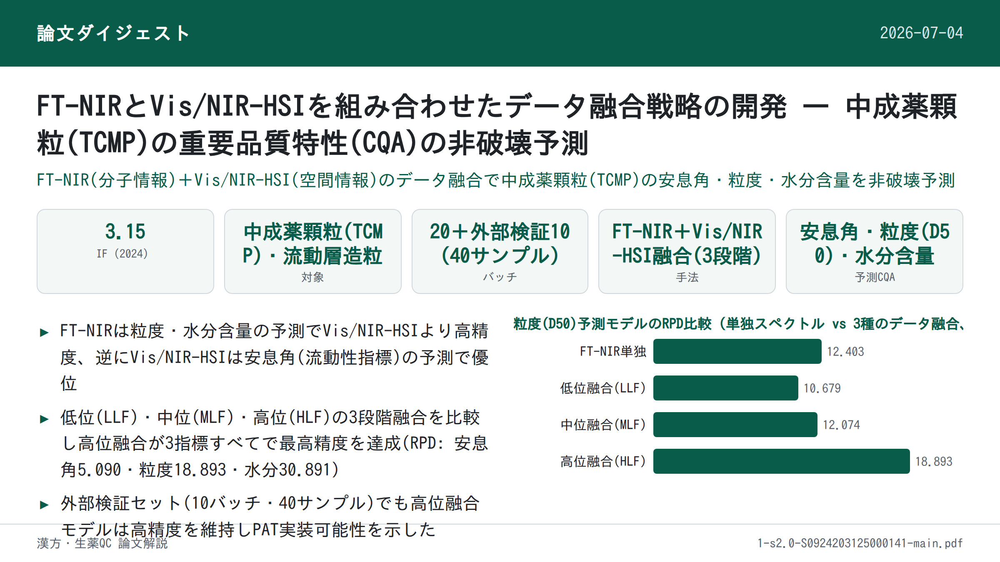

FT-NIRとVis/NIR-HSIを組み合わせたデータ融合戦略の開発 — 中成薬顆粒(TCMP)の重要品質特性(CQA)の非破壊予測

書誌情報
- 原題: Development of a data fusion strategy combining FT-NIR and Vis/NIR-HSI for non-destructive prediction of critical quality attributes in traditional Chinese medicine particles
- 著者・所属: Ziqian Wang, Xinhao Wan, Xiaorong Luo, Ming Yang, Xuecheng Wang, Zhijian Zhong, Qing Tao（責任著者）, Zhenfeng Wu（責任著者）（江西中医薬大学 現代化された古典的・著名処方の国家重点実験室、江西省薬品検査センター、江西中医薬大学コンピュータ研究所、華潤江中製薬集団、いずれも中国）
- 掲載誌・巻号・DOI: Vibrational Spectroscopy 137 (2025) 103780. https://doi.org/10.1016/j.vibspec.2025.103780
- インパクトファクター: 3.15（Vibrational Spectroscopy、JCR 2024 / Clarivate。前年から約12.9%上昇。5年IFは2.8、Q3。複数のジャーナル指標集計サイトで一致を確認したが、Clarivate公式レポートの直接確認ではないため数値は参考値として扱うこと）
- 受理経過 / ライセンス: 2024年11月27日受理稿受付、2025年1月12日改訂稿受領、2025年1月30日受理、2025年2月1日オンライン公開。Elsevier B.V.（テキスト・データマイニング、AI学習等を含め全著作権留保 © 2025）
補足: 本稿は生薬・方剤の成分分析ではなく、中成薬顆粒(TCMP)の造粒(顆粒化)工程そのものを対象に、FT-NIRとVis/NIR-HSIという2種類の近赤外分光技術を「データ融合」で組み合わせ、粒子の重要品質特性(CQA: Critical Quality Attributes)を非破壊・リアルタイムに予測するPAT(プロセス解析技術)研究である。当サイトの「製造法」タグに分類される既訳の総説（tcm-granulation-pat-review: TCM造粒PAT総説）が扱う技術群のうち、NIR分光とハイパースペクトルイメージングを実際に組み合わせて定量モデルを構築した実証研究にあたる。
要旨（Abstract）
本研究は、フーリエ変換近赤外分光法（FT-NIR）と可視/近赤外ハイパースペクトルイメージング（Vis/NIR-HSI）の相補的な能力を検討し、中成薬顆粒（TCMP）の重要品質特性（CQAs）を予測するためのデータ融合戦略を開発するものである。本研究は、これらの技術を先進的なプロセス解析技術（PAT）プラットフォームに統合することに重点を置く。分子特性評価に優れたFT-NIRと、空間的な品質評価に優れたVis/NIR-HSIそれぞれの独自の強みを活用し、予測精度を高めるための複数のデータ融合戦略を評価した。流動層造粒法を用いて20バッチのTCMPを製造し、その特性をFT-NIRおよびVis/NIR-HSIで評価した。比較分析の結果、水分含量および粒度の単独予測において、FT-NIRがVis/NIR-HSIよりも優れていることが明らかになった。次に、両方のスペクトル範囲からの相補的情報を組み合わせるための高度な融合スキームを開発し、部分最小二乗法（PLS）モデルを構築した。評価した3つの融合レベルのうち、高位融合（high-level fusion）戦略が流動性、粒度、水分含量について最も高精度な予測を達成した。本研究は、FT-NIRとVis/NIR-HSIデータの高位融合がTCMPのCQA予測の効率と精度を大幅に向上させ得ることを示すものである。さらに、提案する手法は顆粒状医薬品の迅速かつ非破壊的な品質分析を可能にし、リアルタイムのオンラインモニタリングを実現し、自動化された医薬品安全プロセス管理を前進させるための実践的な知見を提供する。
キーワード 中成薬顆粒（Traditional Chinese Medicine particle）、FT-NIR、Vis/NIR-HSI、多元データ融合（Multi-source data fusion）、重要品質特性（Critical quality attributes）、PATプラットフォーム
1. 序論（Introduction）
造粒は経口固形製剤の製造における重要な工程であり、医薬品製剤において重要な役割を果たす。均一な粒径と一貫した外観を持つ粒子を製造することは、流動性や溶解性といった原料の物理的特性を向上させ、正確な計量とより優れた携帯性といった利点をもたらす[1,2]。これらの粒子は、顆粒剤やカプセル剤のように最終製品となる場合もあれば、優れた圧縮成形性が求められる錠剤製造における中間体となる場合もある。造粒プロセスの変動性と複雑性（原料の水分含量の変動、混合時間や造粒速度といったプロセス条件の変動を含む）を考えると、重要材料特性（CMAs：例えば原料の粒度や流動性）、重要工程パラメータ（CPPs：造粒温度や結合剤添加速度を含む）、および周囲湿度や操作者の取り扱いといった外部要因を効果的に制御することが不可欠である。これらの制御は、製品の品質・安全性・有効性を保証するために所定の限界内に維持されなければならない物理的・化学的・生物学的・微生物学的な特性である重要品質特性（CQAs）を管理するために極めて重要である。造粒プロセスにおけるCQAsには、均一性、溶出速度、安定性などが含まれ、これらは高品質な経口固形製剤を一貫して製造するために不可欠である。例えば、水分含量（CMA）や造粒温度（CPP）の制御が不十分であると、顆粒の流動性（CQA）が低下し、下流工程に悪影響を及ぼす可能性がある。近年の研究では、造粒プロセスを最適化し製品品質を高めるために、CMAs・CPPs・CQAsを体系的に管理することの重要性がさらに強調されている[3–5]。
造粒に影響を与える要因の理解を深めるため、多くの研究がCQAsの評価を改善するために単一あるいは複数のPATツールを採用してきた[6]。流動性、粒度、水分含量といった特性は、打錠時の圧縮性・緻密化・付着性に大きな影響を与え、最終的に錠剤品質を左右するため重要である[7–9]。例えば、広く用いられるPATツールであるNIR分光法は、水分含量や粒度をリアルタイムで監視するために用いられ、プロセスパラメータの動的な調整を可能にする。同様に、ラマン分光法は化学的均一性を評価するために利用され、造粒中の一貫した製品品質を確保する。様々なPATツールは、製剤科学における製品品質の監視と管理のために広く採用されている[10,11]。これらのツールは、粒度や水分含量といった単一の特性に着目する単一CQAモニタリングツールと、複数の特性を同時に評価する複数CQAモニタリングツールに分類できる。しかし、中成薬顆粒（TCMP）の造粒は、原料特性の変動性に起因する固有の課題を抱えている。TCMPの原料の多くは複雑な化学組成、高い吸湿性、強い付着性、多様な物理化学的特性を有する生薬エキスである[12]。さらに、一部の医薬品は不均一な粒度・密度、乏しい流動性、層化しやすい傾向を持つ原末を含む。従来の造粒プロセスは、こうした特性ゆえにTCMPへ直接適用することが困難である。品質評価と終点検出のための従来のオフライン監視法は、これらの課題に対処するために必要なリアルタイムフィードバックを欠いており、しばしば非効率性や不整合を招く[13]。これに対し、NIR分光法やラマン分光法などのPATツールは、流動性・水分含量・化学的均一性といったCQAsをリアルタイムで検出できる監視能力を提供する[14–16]。これらのツールは生産プロセスの設計・分析・管理を促進し、サイクルタイムを短縮し、最終製品の品質を確保するため、TCMP造粒の複雑な要求に特に適している。同時に、造粒プロセス中のCQAsを監視するために単一または複数のPATツールを活用する傾向が高まっている。このアプローチは多変量データ処理技術と組み合わされることで、造粒の理解と制御を高める予測モデルの開発を促進する[17]。
フーリエ変換近赤外分光法（FT-NIR）と可視/近赤外ハイパースペクトルイメージング（Vis/NIR-HSI）は、食品・医薬品業界で広く用いられている迅速かつ非破壊的な技術である。FT-NIRはFDAのPATガイダンスの重要な一部として、所与の粒度分布内の微妙な変動を検出し、圧縮された粒子の変形特性を評価することに優れている[18]。さらに、FT-NIRは粒子の水分含量や流動性を決定するために頻繁に用いられ、CQAsを監視するための貴重なツールとなっている[19]。しかし、FT-NIR単独ではTCMPの解析に限界があり、そのCQAsを正確に予測するために必要な複雑な物理的・化学的特性を完全には捉えられない可能性がある。もう一つの迅速かつ非破壊的な手法であるVis/NIR-HSIは、イメージングと分光を組み合わせることで空間的に分解された品質データを提供し、顆粒の内部・外部両方の特性を捉えることでFT-NIRを補完する。FT-NIRが分子特性評価に優れる一方、Vis/NIR-HSIは均一性や粒度変動といった空間分布を評価する能力を加える。これらの相補的な強みにより、両者の統合はTCMPにおけるCQAs監視に特に有益となる。例えば、流動性、化学的均一性、顆粒の均質性といった追加的なCQAsも、これらの技術を用いて効果的に監視できる。近年、医薬品分野におけるハイパースペクトルイメージングの応用は拡大している。これらの技術は造粒における重要特性の監視にますます適用されるようになっている。例えば、Taoらは、造粒プロセス中の水分含量、粒度分布、4種の生物活性化合物の含量を監視するハイパースペクトル画像解析法を開発した[20]。これは、Vis/NIR-HSIがFT-NIRを補完し、医薬品製造における複雑なCQAsの監視を強化する可能性を示している。
FT-NIRやVis/NIR-HSIといった単一技術は医薬品業界でCQAs監視のために広く研究・応用されてきたが、スペクトル範囲の制限や不完全なデータカバレッジといった限界があり、データ融合法の利用が必要となる。現行の分光法およびハイパースペクトルイメージングシステムは、センサー製造上の課題により400〜2500 nmの全範囲をカバーすることはほとんどない。そのため、それぞれ384.4〜1004.6 nm（CMOS検出器）と1000〜2500 nm（InGaAs検出器）の範囲に感度を持つ2つの検出器を用いることが実用的な解決策となる[21]。例えば、FT-NIRは分子特性や水分含量の解析に優れ、Vis/NIR-HSIは空間分布や粒度データを提供するため、両者の統合はTCMPにとって特に価値がある。複数の機器からの情報を組み合わせるデータ融合は、相補的なデータを統合してプロセスの理解と制御を強化することで、これらの限界に対処する。例えば、FT-NIRとVis/NIR-HSIのデータを組み合わせることで、TCMPの重要なCQAsである粒度と水分含量の予測を改善できる。データ融合は低位・中位・高位の3レベルに分類され、スペクトル情報を統合するための体系的なアプローチを提供する[22,23]。低位データ融合（low-level data fusion）では、生のスペクトルデータが前処理された上で直接結合される。例えば、FT-NIRとVis/NIR-HSIのスペクトルを統合して包括的なスペクトルカバレッジを提供する。このアプローチは異なるスペクトル範囲からの相補的情報を捉え、粒子特性の微妙な変動を検出するのに特に有用である。中位データ融合（middle-level data fusion）では、化学組成や粒度といった主要な特徴が異なるデータソースから抽出され、モデリングと解析のために統合される。例えば、FT-NIR由来の水分含量とVis/NIR-HSI由来の空間的粒度分布を組み合わせることで、TCMPの化学的・空間的特性の両方を捉え、CQAsの予測精度を高めることができる。高位データ融合（high-level data fusion）は、個々のモデルの予測結果（例えば水分含量と流動性の別々のモデル）を集約して最終的な決定を下す。このアプローチは、各モデルの強みを活かすことで意思決定を改善するのに特に有用である。データ融合は、不規則な粒度・密度・吸湿レベルといった原料特性の固有の変動性のため、従来法では効果的に対処できないTCMPにとって特に価値がある。例えば、Casianらは、NIRスペクトルデータと粒度分布を統合することで錠剤生産の制御を改善する高位データ融合の可能性を実証した[18]。同様に、Fuらは、NIRとAE（アコースティックエミッション）技術を高位データ融合と組み合わせることで、粒度分析の精度と信頼性を高めた[24]。このような有望性にもかかわらず、FT-NIRとVis/NIR-HSIをデータ融合と組み合わせてTCMPのCQAsを予測した研究はこれまで報告されておらず、本研究はこの分野における革新的な貢献となる。
したがって、本研究は、FT-NIRとVis/NIR-HSIをデータ融合戦略と統合し、TCMPのCQAsをリアルタイムかつ高精度に予測する多機器PATプラットフォームを開発することを目的とする。具体的な目的は次の通りである：(1) 単一の分光技術ならびに低位・中位・高位のデータ融合を用いて、TCMPのCQAsに対する部分最小二乗法（PLS）予測モデルを開発すること；(2) 異なる融合戦略にわたるモデル性能を比較し、最適なデータ融合スキームを特定し、CQAs監視のための堅牢な多機器PATプラットフォームを確立すること。本研究で対象とするCQAsは流動性、粒度、水分含量であり、これらはTCMP生産における製品品質と一貫性を確保する上で重要である。この新規アプローチは、FT-NIRとVis/NIR-HSIの相補的な強みを組み合わせることで、既存の単一技術法と比較してより包括的かつ正確な解析を提供する。両技術からの独自のスペクトルデータを活用することで、本研究はTCMPのCQAsを包括的・迅速・非破壊的に検出するための革新的な解決策を提案する。本研究の知見は、特に伝統中薬生産の複雑な要求に対して、医薬品製造におけるオンライン薬物安全性監視と自動化を推進するための理論的・実践的基盤を確立することが期待される。
2. 材料と方法（Materials and methods）
2.1. 材料（Materials）
本研究で使用したTCMPの構成成分は、中成薬エキス末、ヤマイモ（山薬）末、砂糖末、デキストリンであり、江西江中製薬有限公司から供給された。各材料の詳細は以下の通りである：中成薬エキス末は生理活性化合物含量が規格化されており、微細粉末の形態で供給された；ヤマイモ末は100〜120メッシュの粒度に調製された；砂糖末は純度99%以上の医薬品グレードのショ糖であった；デキストリンはデキストロース当量（DE値）10〜15の医薬品グレードであった。本研究で使用したすべての材料は医薬品グレードであり、関連する薬局方規格に定められた仕様を満たしていた。
2.2. サンプル調製（Sample preparation）
6因子・各2水準の部分要因実験計画（partial factorial experimental design）を用いて、TCMPを20バッチ調製した。造粒温度、乾燥時間、結合剤濃度、給気圧、噴霧化圧力、供給速度を、表1に示すマトリクスに従って変化させた。造粒は固定の原料比率を用いて流動層造粒装置で行われた。流動層造粒プロセスは、(1) 流動層の加熱、(2) 各濃度の結合剤の調合とウォーターバスでの加熱、(3) 実験計画で指定されたプロセスパラメータに従った造粒、の3ステップから構成された。さらに、異なる濃度におけるTCMPの処方組成と使用量を表2に示す。
補足: 表1の列見出しはPDFからのテキスト抽出時にレイアウトが崩れており、本文中に記載された6因子（造粒温度・乾燥時間・結合剤濃度・給気圧・噴霧化圧力・供給速度）の名称と、抽出テキスト中に断片的に現れた単位表記（℃・%・min、および表2直後に現れた「Spray pressure (Mpa)」「Feed speed (mL/min)」「Inlet air volume (m3/h)」）を突き合わせて列を再構成した。数値そのものは原文ママである。正確な列対応を確認したい場合は原文PDFの表1を参照されたい。
表1: TCMP調製における要因水準を示すDoE（実験計画）マトリクス
| Exp No. | 乾燥温度(℃) | 結合剤濃度(%) | 噴霧化圧力(MPa) | 供給速度(mL/min) | 給気量(m³/h) | 乾燥時間(min) |
|---|---|---|---|---|---|---|
| 1 | 65 | 18 | 0.3 | 15.0 | 40 | 8.0 |
| 2 | 55 | 13 | 0.2 | 11.5 | 35 | 5.5 |
| 3 | 65 | 18 | 0.1 | 15.0 | 30 | 3.0 |
| 4 | 45 | 18 | 0.1 | 15.0 | 40 | 3.0 |
| 5 | 65 | 8 | 0.3 | 8.0 | 30 | 8.0 |
| 6 | 45 | 18 | 0.1 | 8.0 | 40 | 8.0 |
| 7 | 65 | 8 | 0.1 | 15.0 | 40 | 8.0 |
| 8 | 65 | 8 | 0.3 | 15.0 | 30 | 3.0 |
| 9 | 45 | 18 | 0.3 | 8.0 | 30 | 3.0 |
| 10 | 45 | 8 | 0.1 | 8.0 | 30 | 3.0 |
| 11 | 55 | 13 | 0.2 | 11.5 | 35 | 5.5 |
| 12 | 45 | 18 | 0.3 | 15.0 | 30 | 8.0 |
| 13 | 45 | 8 | 0.1 | 15.0 | 30 | 8.0 |
| 14 | 65 | 18 | 0.3 | 8.0 | 40 | 3.0 |
| 15 | 45 | 8 | 0.3 | 8.0 | 40 | 8.0 |
| 16 | 65 | 8 | 0.1 | 8.0 | 40 | 3.0 |
| 17 | 55 | 13 | 0.2 | 11.5 | 35 | 5.5 |
| 18 | 45 | 8 | 0.3 | 15.0 | 40 | 3.0 |
| 19 | 65 | 18 | 0.1 | 8.0 | 30 | 8.0 |
| 20 | 55 | 13 | 0.2 | 11.5 | 35 | 5.5 |
表2: TCMPの処方組成と使用量
| 成分 | 結合剤濃度 8% | 結合剤濃度 13% | 結合剤濃度 18% |
|---|---|---|---|
| 中成薬エキス末 (g) | 375 | 375 | 375 |
| ヤマイモ末 (g) | 675 | 675 | 675 |
| 砂糖末 (g) | 1875 | 1875 | 1875 |
| デキストリン (g) | 75 | 75 | 75 |
| 使用水量 (mL) | 863 | 502 | 342 |
注: この表は、3種類の結合剤濃度（8%・13%・18%）におけるTCMPの処方組成と使用量を示す。使用水量の値は、各結合剤濃度を調製するために必要な水量に対応する。
（図1: データ融合戦略の模式図。PDFから画像として抽出できなかったため掲載していない。低位・中位・高位の3レベル融合の概念図であり、詳細は原文参照。）
2.3. CQAsの測定（Measurement of CQAs）
2.3.1. 水分含量（Moisture content）
TCMPサンプルの水分含量を決定するため、まず清浄な秤量瓶を105℃のオーブンで1時間乾燥した。取り出し後、瓶をデシケーター内で室温まで冷却し秤量した。このプロセスは、連続する測定値の差が2 mg以内になるまで繰り返し、安定した重量を確保した。空瓶の質量をm3として記録した。次に、TCMPサンプルを秤量瓶に加え、サンプルと瓶の合計質量をm1として記録した。サンプルを含む瓶を105℃のオーブンに12時間入れ、水分を除去した。この乾燥・秤量プロセスは、連続する測定値の差が2 mg以内になるまで繰り返し、正確な結果を確保した。乾燥後のサンプルと瓶の最終質量をm2として記録した。測定された重量を用いてTCMPサンプルの水分含量（MC）を計算した。MCは乾燥中に除去された水分の割合を反映し、製品の安定性を確保する上で重要な品質パラメータである。計算には以下の式を用いた：
$$MC = \frac{m_1 - m_2}{m_1 - m_3} \quad (1)$$
補足: 原文の式(1)はPDFからのテキスト抽出時に分数の表記が崩れており「MC = m1 − m1 − m2 / m3」とだけ読み取れた。m1(サンプル+瓶の湿重量)・m2(サンプル+瓶の乾燥後重量)・m3(空瓶重量)という定義、および「除去された水分の割合」という説明文から判断し、水分含量測定の標準的な定義式である上記の形（(m1−m2)/(m1−m3)）として復元して記載している。正確な数式表記は原文PDFを参照されたい。
2.3.2. 粒度（Particle size）
サンプルの粒度は、Malvern Scirocco 2000乾式分散ユニットを装備したMalvern Mastersizer 2000（Malvern Instruments、英国ウスターシャー）を用い、レーザー回折法により乾式分散モードで測定した。各測定には約3 gのサンプルを使用し、測定時間は6秒、分散用空気圧は2 barとした。Mie散乱理論に基づいて動作するMalvern Mastersizer 2000は、その精度と乾式分散への適合性で広く認められており、本研究における粒度解析に理想的な選択であった。D50は医薬品造粒プロセスにおけるCQAであり、粒子の流動性に大きな影響を与えるため、TCMPの粒度解析に用いられた。
2.3.3. 流動性（Flowability）
TCMPサンプルの流動性は、粉体材料の流動性評価用に特別に設計された機器であるBT-1001インテリジェント粉体特性試験機を用いて測定した。約50 gのサンプルを機器の投入口に加え、直径10 mmの篩を持つ漏斗を通じて均一に流下させ、測定プラットフォーム上にこぼしてコーン（円錐）を形成させた。コーンが安定し対称的になり、粉体がプラットフォームの周囲に均一に落下する状態になった時点で給粉を停止した。コーンの斜面とプラットフォーム表面のなす角度を安息角として測定した。最終的な安息角は3回の測定値の平均から求めた。安息角は粒子の流動性を評価するための主要なパラメータである。本研究では、流動性不良が不均一な造粒、不規則な粒子分布、圧縮時の困難につながり最終製品の品質に影響を及ぼし得ることから、安息角をTCMPの流動性の指標として用いた。
2.4. FT-NIR分光法（FT-NIR spectroscopy）
サンプルの拡散反射スペクトルは、Antaris™ II FT-NIR（Thermo Fisher Scientific Co., Ltd., Waltham, USA）を用いて収集した。装置は分解能8 cm⁻¹で1000〜2500 nmのスペクトル範囲を走査するよう設定した。各測定は64回スキャンで構成され、精度を確保するため1時間ごとにバックグラウンドスペクトルを収集した。安定した信号を得るため、分光計は25℃・相対湿度47%未満の管理された条件下で運用し、データ収集前に1時間のウォームアップ時間を設けた。各サンプルについてスキャンを3回繰り返し、その平均値を以降の統計解析に用いた。FT-NIR分光法は、その迅速・非破壊的な性質と、詳細な分子・組成情報を提供する能力から本研究に選択された。Antaris™ IIモデルは、高い感度・精度・安定性から特に選択され、TCMPのような複雑なサンプルの解析に理想的であった。広いスペクトル範囲の取得と反復スキャンの利用により、この装置は正確な統計モデリングとTCMPのCQA予測に不可欠な、信頼性が高く再現性のあるデータを確保した。
2.5. Vis/NIRハイパースペクトルイメージング（Vis/NIR hyperspectral imaging）
サンプルのハイパースペクトル画像は、384.4〜1004.6 nmの波長範囲で動作するVis/NIRハイパースペクトルカメラ（GaiaField-V10、四川双利合璞科技有限公司、中国成都）を用いて取得した。この装置は128個のスペクトルバンドと640ポイントの空間分解能を備え、詳細なスペクトル・空間情報の取得に適している。焦点距離17 mmのレンズを暗箱環境内のカメラに装着し、サンプルの50 cm上方に設置することで均一な照明を確保し外部干渉を最小化した。照明装置は4基の120Wハロゲンランプで構成され、露光時間とフレーム周期は光強度に基づき5 msに設定した。
正確なスペクトルデータを確保するため、スペクトル画像取得前にブラックボードおよびホワイトボードの参照画像を取得した。
ブラックボード参照画像はカメラの暗電流を補正し、ホワイトボード参照画像は照明のばらつきと検出器感度を補正することで、較正済みの反射率データを確保する。較正プロセスは、以下の式を用いて生のハイパースペクトル画像を反射率画像に変換する：
$$R_C = \frac{R_S - R_D}{R_W - R_D} \quad (2)$$
ここで、RWはホワイトボード参照画像、RDはブラックボード参照画像、RCは較正済み反射率画像、RSは生のハイパースペクトル画像である。
補足: 原文の式(2)もPDFからのテキスト抽出時に分数表記が崩れており「RC = RS − RW − RD / RD」とだけ読み取れた。反射率較正の標準的な定義（暗電流補正後の測定値を、白板と暗電流補正の差で正規化する）に基づき、上記の形（(RS−RD)/(RW−RD)）として復元して記載している。正確な数式表記は原文PDFを参照されたい。
合計100セットのハイパースペクトル画像を取得し、反射率画像に較正した。較正済み画像はENVI 5.3ソフトウェアに取り込み、さらに処理した。各サンプルについて、解析対象領域を分離するため関心領域（ROI）を手動で選択した。各スペクトルバンドについて、ROI内の全ピクセルの平均スペクトル値を算出した。
本研究でのVis/NIR HSIの利用は、TCMP解析に大きな利点をもたらす。スペクトルと空間の両方の情報を取得することで、HSIは化学組成と物理的特性を同時に評価することを可能にし、流動性・粒度・水分含量といったCQAsの予測に理想的である。ROIに基づくアプローチは、関連するサンプル領域のみが解析されることを保証し、後続のモデリングと解析のためのスペクトルデータの精度と信頼性を高める。
2.6. データセットの分割とスペクトル前処理（Data set partitioning and spectral pretreatment）
Kennard-Stoneアルゴリズム[25]を用いて、合計75サンプルと25サンプルのTCMPサンプルをそれぞれ校正セットと検証セットとして選択した。このアルゴリズムはスペクトル空間内でのサンプルの均等な分布を確保し、モデルの頑健性を向上させる。ランダムノイズやベースラインドリフトといった外部要因に起因する誤差に対処するため、データ品質と予測性能を高める複数のスペクトル前処理法を適用した[26]。適用した前処理法は、多重散乱補正（MSC）、標準正規変量（SNV）、一次微分（1st）、二次微分（2nd）、一次微分+SG平滑化フィルタ（1st+SG）、二次微分+SG平滑化フィルタ（2nd+SG）である。各前処理法の有効性はモデル性能を比較することで評価し、予測精度とスペクトル品質を向上させる能力に基づいて最適な方法を選択した[27]。
2.7. 特徴変数選択（Feature variable selection）
スペクトルデータには本質的な情報と冗長な情報の両方が含まれており、特にCQAsの正確な予測のためには、モデルの簡素化・計算複雑性の低減・予測性能の向上のために特徴変数選択が重要である[28]。これらのニーズに対応するため、3つの特徴変数選択法を採用した：競合適応的重み付けサンプリング（Competitive Adaptive Reweighted Sampling, CARS）、Random Frog（RF）、モンテカルロ型非情報変数除去（Monte Carlo Uninformative Variable Elimination, MC-UVE）である。これらの方法は、ノイズを低減し関連するスペクトル情報に焦点を当てることで、予測モデルの効率と精度を高める主要な変数を特定した[29–31]。これらの特徴選択法は高次元スペクトルデータの課題に対処し、より精密な波長選択と頑健なモデル開発を可能にする。例えば、RF（Random Frog）を適用した場合、水分含量に関連する波長変数を良好に特定し、モデル精度を大幅に向上させた。これらの方法をモデリングプロセスに統合することは、TCMP生産のための効率的かつ信頼性の高い予測を確保する、CQAsの予測モデル開発という本研究の目標を直接支えるものである。
補足: 本稿における略称「RF」は、変数選択法の一種であるRandom Frog（乱数蛙、モンテカルロ型可逆ジャンプ法に基づく変数選択アルゴリズム）を指す。産地判別等で用いられる機械学習の「Random Forest（ランダムフォレスト）」とは別の手法であり、後掲の表3〜5の「RF」もすべてRandom Frogを意味する（原文の記法のまま）。
（図2: 異なる造粒条件下で調製された20バッチのTCMPサンプルの外観。サンプルは色・粒度・表面質感に顕著な差異を示し、プロセスパラメータが製品品質に与える影響を反映している。画像は掲載していない。原文参照。）
2.8. 多元データ融合（Multi-source data fusion）
本研究で用いた3つのデータ融合スキームを図1に示す[32]。低位融合（LLF）では、NIRおよびハイパースペクトルの前処理済みデータをサンプルの入力変数として共同で処理する。中位融合（MLF）には2つのシナリオがある。i) NIRデータとハイパースペクトルデータそれぞれに同じ特徴選択法を用いて特徴変数を選択し、両スペクトルの特徴変数を融合する。これは一般的に用いられる中間レベルの戦略である[33,34]。ii) FT-NIRデータとVis/NIR-HSIデータそれぞれに複数の特徴選択法を用いて特徴変数を選択し、両スペクトルにおける最良の変数選択結果を融合する。高位融合（HLF）では、NIRデータとハイパースペクトルデータそれぞれについて個別の多変量解析モデルを作成し、各モデルの結果を組み合わせる。本研究では、この高度な融合問題を解くために重回帰分析（multiple linear regression）を用いた。重回帰式は以下の通りである：
$$Y_{ac} = b + K_1 X_{1,pc} + K_2 X_{2,pc} \quad (3)$$
$$Y_{dfpc} = b + K_1 X_{1,pvc} + K_2 X_{2,pvc} \quad (4)$$
$$Y_{dfpv} = b + K_1 X_{1,pvv} + K_2 X_{2,pvv} \quad (5)$$
ここで、Yacは校正セットの実測値；YdfpcおよびYdfpvはそれぞれ校正セットおよび検証セットに対する高度なデータ融合の予測値；X1,pc、X2,pcはそれぞれNIRおよびハイパースペクトル校正セットの予測値；X1,pvv、X2,pvvはそれぞれNIRおよびハイパースペクトル検証セットの予測値；K1、K2はそれぞれNIRおよびハイパースペクトルの重み；bは重回帰の切片である。上記のデータ融合戦略を通じて、本研究はNIRとVis/NIR-HSIの相補的情報を統合するだけでなく、TCMPのCQAs（例えば流動性、粒度、水分含量）の予測精度を大幅に向上させ、TCMP生産プロセスにおける品質の一貫性と効率最適化を確保する。
補足: 原文の式(3)〜(5)はPDFからのテキスト抽出時に添字（下付き文字）の表記が崩れている可能性がある。特に式(3)は「Yac」を校正セットの実測値と説明しながら回帰式として提示されており、本来は高位融合の校正セット予測値（例えば Ydfac 等）を表す式である可能性が高いが、原文テキストのまま「Yac」として記載した。正確な添字表記は原文PDFの数式を参照されたい。
表3: 各種前処理法によるPLSモデリング結果（FT-NIR・Vis/NIR-HSI単独）
| 指標 | データ | 前処理法 | R²c | RMSEC | RMSECV | R²p | RMSEP | RPD |
|---|---|---|---|---|---|---|---|---|
| 安息角(°) | FT-NIR | MSC | 0.687 | 1.223 | 1.726 | 0.854 | 1.205 | 2.552 |
| SNV | 0.693 | 1.212 | 1.814 | 0.862 | 1.187 | 2.591 | ||
| 1st | 0.680 | 1.267 | 1.846 | 0.850 | 1.318 | 2.314 | ||
| 2nd | 0.563 | 1.403 | 1.830 | 0.841 | 1.642 | 1.900 | ||
| 1st+SG | 0.666 | 1.279 | 1.848 | 0.820 | 1.369 | 2.253 | ||
| 2nd+SG | 0.805 | 1.071 | 1.699 | 0.717 | 1.399 | 1.896 | ||
| Vis/NIR-HSI | MSC | 0.819 | 1.109 | 1.617 | 0.628 | 1.353 | 1.627 | |
| SNV | 0.780 | 1.214 | 1.654 | 0.644 | 1.368 | 1.608 | ||
| 1st | 0.811 | 1.074 | 1.360 | 0.794 | 1.130 | 2.130 | ||
| 2nd | 0.781 | 1.092 | 1.684 | 0.883 | 1.047 | 2.684 | ||
| 1st+SG | 0.805 | 1.040 | 1.410 | 0.872 | 0.983 | 2.763 | ||
| 2nd+SG | 0.811 | 1.179 | 1.733 | 0.491 | 1.407 | 1.248 | ||
| 水分含量(%) | FT-NIR | MSC | 0.996 | 0.001 | 0.001 | 0.997 | 0.001 | 17.171 |
| SNV | 0.996 | 0.001 | 0.001 | 0.997 | 0.001 | 16.866 | ||
| 1st | 0.997 | 0.001 | 0.001 | 0.998 | 0.001 | 22.364 | ||
| 2nd | 0.997 | 0.001 | 0.001 | 0.994 | 0.001 | 13.041 | ||
| 1st+SG | 0.997 | 0.001 | 0.001 | 0.998 | 0.001 | 24.295 | ||
| 2nd+SG | 0.999 | 0.001 | 0.001 | 0.997 | 0.001 | 17.574 | ||
| Vis/NIR-HSI | MSC | 0.959 | 0.003 | 0.004 | 0.959 | 0.004 | 3.771 | |
| SNV | 0.959 | 0.003 | 0.004 | 0.963 | 0.004 | 3.833 | ||
| 1st | 0.963 | 0.003 | 0.004 | 0.934 | 0.004 | 3.538 | ||
| 2nd | 0.958 | 0.003 | 0.005 | 0.947 | 0.003 | 4.408 | ||
| 1st+SG | 0.959 | 0.003 | 0.005 | 0.957 | 0.003 | 4.732 | ||
| 2nd+SG | 0.943 | 0.004 | 0.006 | 0.846 | 0.006 | 2.485 | ||
| 粒度(μm) | FT-NIR | MSC | 0.977 | 23.903 | 31.255 | 0.977 | 21.405 | 6.127 |
| SNV | 0.980 | 22.640 | 29.297 | 0.976 | 21.979 | 5.967 | ||
| 1st | 0.991 | 14.710 | 21.476 | 0.991 | 14.240 | 10.154 | ||
| 2nd | 0.992 | 13.843 | 21.333 | 0.988 | 17.690 | 8.511 | ||
| 1st+SG | 0.989 | 15.787 | 22.745 | 0.993 | 12.855 | 11.696 | ||
| 2nd+SG | 0.995 | 10.948 | 20.326 | 0.987 | 16.590 | 8.593 | ||
| Vis/NIR-HSI | MSC | 0.971 | 25.488 | 36.358 | 0.973 | 25.251 | 6.143 | |
| SNV | 0.966 | 27.106 | 34.827 | 0.977 | 23.315 | 6.653 | ||
| 1st | 0.974 | 25.539 | 33.019 | 0.965 | 23.019 | 5.260 | ||
| 2nd | 0.974 | 24.270 | 32.752 | 0.979 | 21.714 | 6.991 | ||
| 1st+SG | 0.966 | 27.387 | 33.146 | 0.976 | 22.914 | 6.515 | ||
| 2nd+SG | 0.976 | 23.552 | 38.932 | 0.956 | 31.709 | 4.651 |
補足: MSC=多重散乱補正、SNV=標準正規変量、1st/2nd=一次/二次微分、SG=Savitzky-Golay平滑化フィルタ、R²c/RMSEC=校正セットの決定係数/二乗平均平方根誤差、RMSECV=交差検証の二乗平均平方根誤差、R²p/RMSEP=予測(検証)セットの決定係数/二乗平均平方根誤差、RPD=相対予測偏差。
2.9. モデル構築と統計解析（Model construction and statistical analysis）
本研究ではPLSモデルを用いて、NIRおよびHSIデータにおける共線性とノイズに対処しつつ、スペクトルデータとTCMPのCQAs（水分含量、粒度、流動性）との関係を効果的にモデリングした。最適な主成分数を決定するため10分割交差検証を実施し、過学習のリスクを最小化しモデルの頑健性を高めた。モデル性能は、校正セット（RMSEc）および予測セット（RMSEp）の二乗平均平方根誤差（RMSE）、ならびに校正セット（R²C）および予測セット（R²P）の決定係数（R²）を用いて評価した。相対百分偏差（RPD）は、モデルの信頼性を検証するために適用され、RPD値が3を超える場合は一般に優れた予測能力を示すとされる[35]。これらの評価指標を組み合わせて用いることで、PLSモデルがTCMPのCQAsの予測精度向上に極めて有効であることが示され、TCMP生産におけるプロセス制御と品質の一貫性を支持している。
2.10. ソフトウェア（Software）
NIRSデータのフォーマット変換と前処理にはThe Unscrambler X 10.4を使用した。ハイパースペクトル画像の取得ならびにブラックボード・ホワイトボード較正にはSpecViewを、ROIの選択にはEnvi 5.3を使用した。すべてのスペクトルデータ解析とモデル評価はMatlab R2018bを用いて実施した。
3. 結果と考察（Results and discussion）
3.1. スペクトル解析（Spectra analysis）
異なる造粒プロセス条件下で調製されたTCMPの色、粒度、水分含量、流動性には顕著な差異が見られる。しかし、これらの差異を迅速かつ正確に識別することは依然として困難である（図2）。TCMPの品質評価は外観のみに依存すべきではなく、生産上のニーズに沿ったCQAsの定量的な規格を伴うべきである。
20バッチのサンプルの平均スペクトル値を算出したところ、異なるCQAsを持つTCMPの生のVis/NIR-HSIおよびFT-NIRスペクトルの平均曲線は、同一バンドにおいて類似した振動傾向を示し、ピークは一貫した位置・強度で出現した（図3）。観察された振幅の変動は、主に水分含量と化学組成の差異に起因し、これらは粒度、流動性、安定性といったCQAsに直接影響を及ぼす。図3Aは4000〜10,000 cm⁻¹のスペクトルバンドを示しており、4320 cm⁻¹、5181 cm⁻¹、6896 cm⁻¹、8346 cm⁻¹に4つの明瞭な吸収ピークが確認された。Ciccorittiら[36]によると、約4320 cm⁻¹、5181 cm⁻¹、8346 cm⁻¹のピークはそれぞれ水・セルロース・糖の吸収に関連し、6896 cm⁻¹のピークは主要な化学成分であるヘスペリジンに対応する。5181 cm⁻¹のピークはO-H伸縮と変角の組み合わせに由来し、4320 cm⁻¹のピークはC-H部分の変角・伸縮振動の組み合わせに起因する[37]。図3Bは各バッチのサンプルの384.4〜1004.6 nmにおける平均スペクトルバンドを示す。異なるバッチのスペクトル曲線は同様の傾向を示し、384.4〜410 nmの範囲でわずかな反射率の低下が見られた後、410 nmから増加傾向を示した。960〜980 nmには明瞭な吸収谷が見られ、これは主に3次・4次倍音および他の結合バンドに関連している[38]。Badaróら（2020）[39]によれば、反射率の結果にピークが見られることがあるが、本研究では有意なピークは観察されなかった。Vis/NIR-HSIについては、スペクトル範囲（384.4〜1004.6 nm）が主に可視光領域に集中しているため、生データから異なる化学結合の伸縮振動を区別することは困難である。したがって、ノイズと冗長情報を除去し、主要なスペクトル特徴を増幅することにより、TCMPのCQAsの予測精度と信頼性を高める必要がある。
3.2. 最適前処理法の選択（Selection of optimal pretreatment）
前処理済みのFT-NIRおよびVis/NIR-HSIデータに基づき、TCMPのCQAsに対する予測モデルを構築した（表3にまとめる）。安息角、粒度、水分含量の予測について、FT-NIRスペクトルの最適な前処理法はそれぞれSNV、一次微分、1st+SG平滑化フィルタであり、RPD値はそれぞれ2.591、10.154、24.295であった。Vis/NIR-HSIスペクトルについては、最適な前処理法はそれぞれ1st+SG、二次微分、1st+SGであり、RPD値はそれぞれ2.763、6.991、4.732であった。FT-NIRの粒度予測モデルにおける一次微分のRPD値は1st+SG平滑化フィルタよりわずかに低かったが、そのトレーニングセットRMSEはテストセットのRMSEにより近く、より良好な性能を示していた。したがって、粒度予測の最適前処理法として一次微分を選択した。前処理法の選択は、スペクトルデータの具体的な特性と、検出指標ごとのスペクトル特徴への依存性によって決まる。例えば、粒度予測では一次微分がバックグラウンドノイズを効果的に除去し、粒度変動に関連する微妙なスペクトル特徴を強調する。水分含量予測では、水が顕著な吸収ピークを示すため、1st+SGのような平滑化フィルタが主要な特徴を保持しつつノイズを除去するのにより効果的である。さらに、安息角は粒子の物理的散乱特性への依存性が高い一方、水分含量は化学的吸収特徴と密接に結びついている。こうした相違が、指標ごとに異なる前処理法が必要となる理由をさらに説明している。単一の前処理法をすべてのケースに普遍的に適用することはできない。冗長情報を除去し重要なスペクトル特徴を強調する適切な前処理法の選択により、モデル性能が大幅に向上する。これはCQA予測の精度を高めるだけでなく、TCMP生産における品質管理目標の達成を強力に支援する。
表4: 特徴変数選択法によるPLSモデリング結果
| 指標 | データ | 前処理＋選択法 | R²c | RMSEC | RMSECV | R²p | RMSEP | RPD |
|---|---|---|---|---|---|---|---|---|
| 安息角(°) | FT-NIR | SNV+RF | 0.717 | 1.145 | 2.032 | 0.862 | 1.154 | 2.664 |
| SNV+CARS | 0.758 | 1.068 | 1.233 | 0.891 | 1.036 | 2.968 | ||
| SNV+MC-UVE | 0.401 | 1.618 | 1.634 | 0.802 | 1.798 | 1.710 | ||
| Vis/NIR-HSI | 1st+SG+RF | 0.829 | 0.969 | 1.694 | 0.855 | 1.026 | 2.646 | |
| 1st+SG+CARS | 0.841 | 0.947 | 1.139 | 0.915 | 0.807 | 3.365 | ||
| 1st+SG+MC-UVE | 0.690 | 1.323 | 1.385 | 0.797 | 1.234 | 2.201 | ||
| 水分含量(%) | FT-NIR | 1st+SG+RF | 0.999 | 0.001 | 0.009 | 0.998 | 0.001 | 20.664 |
| 1st+SG+CARS | 0.999 | 0.001 | 0.001 | 0.998 | 0.001 | 19.673 | ||
| 1st+SG+MC-UVE | 0.971 | 0.002 | 0.002 | 0.982 | 0.002 | 7.401 | ||
| Vis/NIR-HSI | 1st+SG+RF | 0.957 | 0.003 | 0.013 | 0.924 | 0.004 | 3.629 | |
| 1st+SG+CARS | 0.956 | 0.003 | 0.003 | 0.924 | 0.004 | 3.509 | ||
| 1st+SG+MC-UVE | 0.825 | 0.006 | 0.007 | 0.822 | 0.006 | 2.353 | ||
| 粒度(μm) | FT-NIR | 1st+RF | 0.998 | 7.637 | 46.216 | 0.994 | 11.657 | 12.403 |
| 1st+CARS | 0.996 | 9.305 | 10.485 | 0.992 | 13.371 | 10.814 | ||
| 1st+MC-UVE | 0.958 | 31.554 | 35.481 | 0.951 | 39.235 | 3.685 | ||
| Vis/NIR-HSI | 2nd+RF | 0.980 | 20.883 | 79.062 | 0.981 | 20.710 | 7.329 | |
| 2nd+CARS | 0.983 | 19.692 | 25.177 | 0.981 | 20.746 | 7.317 | ||
| 2nd+MC-UVE | 0.939 | 37.378 | 42.787 | 0.956 | 32.178 | 4.717 |
補足: RF=Random Frog（変数選択法）、CARS=競合適応的重み付けサンプリング、MC-UVE=モンテカルロ型非情報変数除去法。
3.3. 単独スペクトルによる予測結果（Prediction results using individual spectra）
続いて、FT-NIRとVis/NIR-HSIデータを用いてTCMPの水分含量・粒度・安息角に対する予測モデルを構築し、各CQAsに対する最適なモデリング手法を表4にまとめた。水分含量と粒度の予測については、FT-NIRモデルのR²値とRPD値がVis/NIR-HSIモデルよりも有意に高く、これらのパラメータに対してFT-NIR分光法がより優れた予測精度を示すことが示された。これは、FT-NIRが分子振動と赤外吸収を解析し、水分含量と粒度に関連する微妙な化学変動を捉える能力に起因すると考えられる。さらに、NIR分光法はその迅速・非破壊的かつ高感度な性質から、粒子の物理的特性の検出における理想的な方法として広く認められている[40]。対照的に、安息角の予測についてはVis/NIR-HSIモデルがFT-NIRモデルよりも優れていた。この差異は、両技術の波長域の違いによるものと考えられる：Vis/NIR-HSIは分光とイメージングを統合しているため、安息角のような物理的属性と密接に関連する粒子表面からの反射スペクトル情報を捉えることができる[41]。
とはいえ、安息角の予測は依然として大きな課題である。一方で、安息角は粒子の形状・大きさ・表面特性に強く影響され、これらはスペクトルデータに直接反映されない可能性がある。他方で、安息角測定に内在する変動性がモデル性能に影響を及ぼす可能性がある。今後の研究では、モデリングアルゴリズムの最適化や、3Dイメージングなどの追加技術の統合により、安息角予測をさらに向上させる方策が考えられる。総じて、本研究の結果は、TCMPのCQA予測におけるFT-NIRとVis/NIR-HSIそれぞれの強みと適用性を明確に示している。FT-NIRは化学成分の定量的特性評価に優れ、Vis/NIR-HSIは物理的特性の把握により効果的である。この2つの技術の詳細な比較を提供することで、本研究の知見はTCMPのCQA予測、特に異なる粒子特性の区別を改善するための貴重な知見をもたらす。これらの結果は、TCMPのプロセス制御と品質最適化を強力に支援するという本研究全体の目標と密接に整合している。
3.4. データ融合による予測結果（Prediction results using data fusion）
LLF戦略に基づく前処理法・特徴変数選択法の結果を表5にまとめる。FT-NIRデータは1557変数、Vis/NIR-HSIデータは128変数を含み、これらを直接統合して1685変数のLLFデータセットを形成した。最適化と前処理を経て、このLLFデータセットを用いて安息角予測のための全波長PLSモデルを構築し、R²PおよびRPD値はそれぞれ0.949と4.259を達成した。この性能は、単一スペクトルモデル（FT-NIR: R²P=0.862、RPD=2.591；Vis/NIR-HSI: R²P=0.872、RPD=2.763）よりも有意に優れていた。しかし、LLF全波長モデルには冗長でノイズの多い変数が多数含まれており、さらなる次元削減が必要であった。個々のデータセットにおいて、最適な前処理後にRF・CARS・MC-UVEの3つの特徴変数選択法を適用した。これらの方法は変数の数を大幅に削減したものの、粒度と水分含量の予測モデルの改善に対する影響は限定的であった。例えば、RFおよびMC-UVE前処理法はR²PおよびRPD値の低下をもたらし、MC-UVEで最も大きな低下が見られた。さらに、安息角の予測モデルも全波長モデルと比較して性能の低下が見られた。これらの結果は、LLF戦略はモデル性能を向上させ得るものの、高次元データの取り扱いと予測結果の最適化には依然として限界があることを示唆している。
MLF戦略では、特徴変数選択法のさらなる最適化により予測性能が大幅に改善された（図4）。安息角予測については、CARS前処理を用いたFT-NIRとVis/NIR-HSIデータの融合モデルが最良の性能を示し、R²C、RMSEC、R²P、RMSEPの値はそれぞれ0.894、0.722、0.939、0.796であった。そのRPD値（3.835）は、単一スペクトルモデル（FT-NIR: RPD=2.968、Vis/NIR-HSI: RPD=3.365）およびLLFモデル（RPD=3.558）を上回った。粒度予測については、CARS+RF法を用いて構築したMLFモデルが最良の性能を示し、RPD値は12.074であり、単一FT-NIRモデル（RPD=12.403）よりわずかに低かった。水分含量予測では、RFに基づくMLFモデルが優れた性能を示し、R²C、RMSEC、R²P、RMSEP、RPDの値はそれぞれ0.997、0.008、0.995、0.001、12.290であった。総じて、MLFモデルは複数のデータソースからの物理化学的特性を効果的に統合し、特に粒度と水分含量についてCQAsの予測精度を大幅に向上させた。
MLFと比較して、HLF戦略は全体的な予測性能をさらに向上させた（図5）。HLFモデルでは、安息角予測にはCARS法が、水分含量にはRFが、粒度予測にはRF+CARSが最良の結果をもたらした。重回帰分析の結果、FT-NIRデータが融合モデルへの寄与がより大きいことが明らかになり、これは単一スペクトルモデルおよびLLFモデルの結果と一致していた。他のモデルと比較して、HLFモデルは安息角・粒度・水分含量についてそれぞれ5.090、18.893、30.891という有意に高いRPD値を達成した。さらに、HLFモデルのRMSEC値はそれぞれ0.664、7.811、0.001まで大幅に低減された。これらの結果は、HLFモデルがMLFおよびLLFモデルよりも予測性能に優れるだけでなく、特に粒度と水分含量の予測において、より優れた安定性と信頼性を示すことを示している。
要約すると、本研究はTCMPのCQAs予測における低位・中位・高位融合戦略の性能を明示的に比較した。結果は、単一スペクトルモデルと比較して、融合戦略がFT-NIRとVis/NIR-HSIデータの相補的情報を効果的に統合し、予測精度とモデルの安定性を大幅に向上させることを示した。特に、分光技術とイメージング技術を組み合わせたHLFモデルは、TCMP品質管理指標の予測を大幅に向上させ、複雑なサンプルの解析におけるデータ融合の可能性と価値を実証した。これらの知見は、TCMP生産プロセスにおける品質管理戦略の最適化のための重要な参考情報となる。
表5: LLF（低位融合）データの前処理法・特徴選択法によるPLSモデル比較
| 指標 | データ | 前処理＋選択法 | R²c | RMSEC | RMSECV | R²p | RMSEP | RPD |
|---|---|---|---|---|---|---|---|---|
| 安息角(°) | LLF | MSC | 0.870 | 0.835 | 1.308 | 0.826 | 1.203 | 2.410 |
| SNV | 0.854 | 0.886 | 1.358 | 0.809 | 1.254 | 2.314 | ||
| 1st | 0.882 | 0.799 | 1.142 | 0.949 | 0.689 | 4.259 | ||
| 2nd | 0.907 | 0.708 | 1.057 | 0.907 | 0.895 | 3.281 | ||
| 1st+SG | 0.876 | 0.818 | 1.285 | 0.945 | 0.740 | 3.975 | ||
| 2nd+SG | 0.902 | 0.786 | 1.233 | 0.861 | 0.935 | 2.683 | ||
| 1st+RF | 0.924 | 0.642 | 2.207 | 0.933 | 0.786 | 3.736 | ||
| 1st+CARS | 0.888 | 0.773 | 0.871 | 0.919 | 0.825 | 3.558 | ||
| 1st+MC-UVE | 0.425 | 1.724 | 1.797 | 0.754 | 1.821 | 1.613 | ||
| 水分含量(%) | LLF | MSC | 0.997 | 0.001 | 0.001 | 0.996 | 0.001 | 15.880 |
| SNV | 0.997 | 0.001 | 0.001 | 0.998 | 0.001 | 19.507 | ||
| 1st | 0.997 | 0.001 | 0.001 | 0.994 | 0.001 | 13.136 | ||
| 2nd | 0.997 | 0.001 | 0.001 | 0.997 | 0.001 | 16.638 | ||
| 1st+SG | 0.997 | 0.001 | 0.001 | 0.995 | 0.001 | 13.479 | ||
| 2nd+SG | 0.998 | 0.001 | 0.001 | 0.997 | 0.001 | 16.927 | ||
| SNV+RF | 0.998 | 0.001 | 0.009 | 0.998 | 0.001 | 20.187 | ||
| SNV+CARS | 0.998 | 0.001 | 0.001 | 0.998 | 0.001 | 20.138 | ||
| SNV+MC-UVE | 0.986 | 0.002 | 0.002 | 0.995 | 0.002 | 10.068 | ||
| 粒度(μm) | LLF | MSC | 0.990 | 15.798 | 21.902 | 0.989 | 14.564 | 9.630 |
| SNV | 0.993 | 13.344 | 18.541 | 0.987 | 15.959 | 8.790 | ||
| 1st | 0.990 | 15.678 | 20.244 | 0.987 | 13.130 | 8.423 | ||
| 2nd | 0.992 | 13.726 | 20.297 | 0.991 | 12.984 | 10.117 | ||
| 1st+SG | 0.990 | 16.072 | 20.502 | 0.990 | 11.107 | 9.954 | ||
| 2nd+SG | 0.993 | 13.443 | 19.769 | 0.988 | 14.310 | 8.854 | ||
| 2nd+RF | 0.994 | 12.431 | 43.629 | 0.987 | 14.939 | 8.793 | ||
| 2nd+CARS | 0.993 | 12.776 | 14.386 | 0.992 | 12.301 | 10.679 | ||
| 2nd+MC-UVE | 0.970 | 26.271 | 27.706 | 0.972 | 21.918 | 5.993 |
（図4: 中位融合(MLF)モデルの結果の棒グラフ。(A) 安息角(°)、(B) 水分含量(%)、(C) 粒度(μm)。画像は掲載していない。原文参照。）
（図5: 3種のデータ融合レベルによる結果の棒グラフ。(A) 安息角(°)、(B) 水分含量(%)、(C) 粒度(μm)。画像は掲載していない。原文参照。）
表6: 3種のデータ融合戦略のモデリング時間複雑性の解析
| モデル区分 | 波長選択時間(秒) | モデリング時間(秒) | テスト時間(秒) | 総所要時間(秒) |
|---|---|---|---|---|
| LLF | 0.8613 | 0.00098 | 0.0104 | 0.87268 |
| MLF | 1.016 | 0.00071 | 0.0116 | 1.02831 |
| HLF | 1.016 | 0.03428 | 0.0223 | 1.07258 |
注: 総所要時間＝波長選択時間＋モデリング時間＋テスト時間。
3.5. モデル比較（Model comparison）
一般に、単一スペクトルモデルの予測結果が不十分な場合、予測精度をさらに高めるためにデータ融合法が用いられる[42]。本研究では、FT-NIRおよびVis/NIR-HSIモデルは粒度と水分含量の予測において優れた性能を示したものの、両モデルとも安息角の予測では不十分であった。これらの単一スペクトルモデルの改善を複数回試みたにもかかわらず、その予測性能は限定的なままであった。この限界は、単一スペクトルモデルが、複雑なサンプル（TCMPなど）のCQAsを包括的に特徴づけるために不可欠な、相補的なスペクトル情報と空間的変動性を同時に捉えることが困難であることに起因する。データ融合戦略を用いた場合、LLFおよびMLFモデルは単一のVis/NIR-HSIモデルを上回ったが、単一のFT-NIRモデルの性能は上回らなかった。この差異は、化学組成の特性評価におけるFT-NIRモデルの優れた予測能力が、物理的な補足情報を提供するVis/NIR-HSIの寄与を上回ったことによる可能性が高い。さらに、LLFおよびMLFで採用された等重み融合戦略が、近赤外スペクトルの可視領域におけるモデリングの有効性を低下させ、これらの融合アプローチの全体的な予測性能を制限した可能性がある。
対照的に、HLFモデルは安息角・粒度・水分含量の予測において最良の性能を示した。図6は、単一スペクトルモデルおよび最良の融合モデルに基づく、TCMPの3つのCQAsに対する実測値(X)対予測値(Y)の散布図を示している。予測能力の観点から、安息角のランキングは HLF > MLF > LLF > Vis/NIR-HSI > FT-NIR、粒度は HLF > FT-NIR > MLF > LLF > Vis/NIR-HSI、水分含量は HLF > FT-NIR > LLF > MLF > Vis/NIR-HSI であった。3種のデータ融合戦略下でのモデルの複雑性を比較するため、波長選択・モデリング・データ予測（テスト）に要する時間を評価した。表6に示すように、モデルの複雑性はHLFが最も高く、次いでMLF、LLFが最も低かった。詳細な解析によれば、中位融合と比較してHLFは同じ波長選択手順を用いるが、そのプロセスは2つのスペクトルデータセットに対して個別の予測モデルをまず構築し、その後これらのモデルを重回帰分析によって組み合わせるというものである。これは、HLFが3つの予測モデルの構築を必要とするのに対し、MLFは1つのモデルのみを必要とすることを意味する。したがって、HLFのモデル複雑性はMLFよりも高い。一方、LLFと比較すると、MLFは両方のスペクトルデータセットに対して波長選択（すなわち2回の波長選択）を必要とするのに対し、LLFは1回のみで済む。その結果、MLFのモデル複雑性もLLFより高い。3つの融合戦略間でモデル複雑性の差異は見られるものの、これらの差異は統計的有意性には達していない。したがって、データ融合戦略を選択する際は、モデルの予測精度を主要な焦点とすべきである。
HLFモデルの性能向上は、FT-NIRとVis/NIR-HSIデータの強みを統合する能力に起因する。FT-NIRは化学組成と分子構造に関する詳細な情報を提供し、Vis/NIR-HSIは分光とイメージング技術を組み合わせて粒子特性に関連する物理的特徴を捉える。これらの相補的なデータソースを意思決定レベルで効果的に統合することで、HLFモデルは優れた予測性能を達成した。特に、HLFモデルは粒度と水分含量の予測に優れていただけでなく、安息角予測においても他の手法を有意に上回った。これは、階層的なデータ融合戦略が多元データの相補性を十分に活用し、単一スペクトルモデルの限界を効果的に克服し、モデル性能の漸進的な改善を達成し得ることをさらに示している。
3.6. 高位融合モデルの外部検証（External validation of the advanced fusion model）
本研究において、HLFモデルは粒子の安息角・粒度・水分含量の予測で優れた性能を示した。高位融合モデルの安定性と汎化能力を評価するため、本研究では独立した10バッチ（40サンプル）からなる外部検証セットに対してモデルを用いて予測を行った。検証プロセスでは、HLFモデルの予測精度を予測値と実測値の比較により評価した（図7・図8）。図7は外部検証における予測値対実測値の散布図を示しており、その結果はHLFモデルが特に安息角と粒度の予測において高い予測精度を維持していることを示している。強い線形関係と小さな予測誤差が見られた。図8は図7をより詳細に示したもので、同一バッチ内のサンプルに対する予測値対実測値の散布図を示している。同一バッチ内でいくつかの差異が見られたものの、予測値は実測値に近い値を保っていた。バッチ間・バッチ内の両サンプルにおいて強い線形関係と小さな予測誤差が見られた。これはさらに、複雑なスペクトルデータの取り扱いにおける高度な融合アプローチの有効性と信頼性を裏付けるものである。結論として、外部検証の結果は、粒子の安息角・粒度・水分含量の予測におけるHLFモデルの主導的地位をさらに確固たるものとし、将来の研究と実用化のための強固な基盤を築くものである。
補足: 原文にはこの後、図7に関する説明キャプション文（「この図は、様々な実験バッチにわたって測定された3つの異なる特性の実測値と予測値の比較を示す。データは3つのサブプロット(A・B・C)で示され、各サブプロットは異なる特性を表す：(A)安息角(°)、(B)水分含量(MC)、(C)粒度(D50、mm)。各データ点は特定の実験バッチ(AからJ)を表し、実測値は赤い点、予測値は黒い点で示される。誤差バーはデータのばらつきを示す。この比較は外部検証セットにおける同一バッチ内サンプルについて行われ、実測値に対するモデル予測の精度を強調している」）が付されている。図そのものは抽出できなかったため、原文参照のこと。
（図7: 外部検証セットにおける予測値対実測値のパリティプロット。(A) 安息角、(B) 水分含量、(C) 粒度。画像は掲載していない。原文参照。）
（図8: 外部検証セットにおける同一バッチ内サンプルの実測値対予測値。画像は掲載していない。原文参照。）
4. 結論（Conclusions）
本研究では、データ融合法とPLSアルゴリズムを用いてFT-NIRとVis/NIR-HSIデータを統合し、TCMPにおけるCQA（流動性・粒度・水分含量）を予測するPATプラットフォームを開発した。主な知見は以下の通りである：
i) Vis/NIR-HSIモデルと比較して、FT-NIRモデルは粒度と水分含量の予測でより高い精度を示した一方、Vis/NIR-HSIモデルは安息角の予測でより優れた性能を示した。 ii) LLFおよびMLFモデルは、Vis/NIR-HSIモデルよりも粒度と水分含量の予測がより良好であったが、FT-NIRモデルほど正確ではなかった。 iii) MLFモデルはすべての指標について予測精度を向上させ、特に粒度予測において最も顕著な改善が見られた。 iv) FT-NIRとVis/NIR-HSIデータを統合したHLFモデルは、すべての指標にわたって最高の精度を達成した。安息角・粒度・水分含量のRPD値は、単一モデルおよびLLF/MLFモデルと比較して有意に増加した。
既存の手法と比較して、本研究の革新性は、データ融合戦略、特にHLFを通じてFT-NIRとVis/NIR-HSI分光技術の利点を有機的に統合した点にある。このアプローチは化学組成の分子特性を捉えるだけでなく、粒子の物理的特性も反映するため、より高い予測精度と広い適用性を実現する。さらに、この方法はTCMPの造粒プロセス中のCQAsのリアルタイムオンライン監視をサポートし、医薬品プロセスの自動化と品質最適化のための重要な基盤を提供する。この方法は柔軟性を有するため、他の複雑な医薬品材料の検出・品質分析にも拡張可能であり、医薬品業界におけるプロセス制御と品質管理のための新しい解決策を提供する。
これらの成果にもかかわらず、本研究には一定の限界がある。第一に、安息角モデリングに使用したデータセットは多様性を欠いており、モデルの予測精度を制約した可能性がある。加えて、本研究ではPLSモデルのみを使用し、サポートベクター回帰（SVR）やRF（ランダムフォレスト）といった、モデル性能をさらに向上させ得る他の回帰法は検討しなかった。PLSモデルは生産上の要求を満たしたものの、今後の研究では、より多様なデータセット・サンプルを取り入れ、様々な回帰モデリング手法を体系的に評価することにより、モデル性能の最適化と頑健性の向上に取り組む予定である。CQA予測の精度と適用性をさらに向上させるため、TCMPの化学組成と物理的特性をより詳細に解析するディープラーニングアルゴリズムの統合も計画されている。これらの取り組みは、TCMPの物理化学的特性の包括的な理解と管理を実現し、リアルタイムのオンライン検出とプロセス制御のための信頼性が高く効率的なツールを医薬品企業に提供することを目指すものである。
補足: 原文には上記に続き、著者声明（Author Statement）・CRedIT著者貢献声明・利益相反の申告・謝辞・データの利用可能性に関する記載がある。謝辞によれば、本研究は中国国家重点研究開発計画プロジェクト（助成番号: 2023YFC3504500, 2023YFC3504503）の支援を受けた。これらは論文の付随情報であるため、本解説では省略した（原文参照）。
訳者補足
- 本研究は生薬・方剤の成分を分析する論文ではなく、中成薬顆粒（顆粒剤・エキス顆粒）の造粒工程そのものをFT-NIRとVis/NIR-HSIという2種類の近赤外分光技術で非破壊・リアルタイムに監視するPAT（プロセス解析技術）研究である。原料は生薬エキス末・ヤマイモ末・砂糖末・デキストリンという典型的な中成薬顆粒剤の処方であり、造粒温度・結合剤濃度・噴霧化圧力・供給速度・給気量・乾燥時間という6因子を実験計画法（DoE）で振って20バッチを作り分けている点が、通常のQC論文（既存サンプルの品質評価）と異なる。
- 実務的に重要な点は、単一技術では不十分という知見である。FT-NIR（1000〜2500 nm、分子振動を反映）は粒度・水分含量の予測に強く、Vis/NIR-HSI（384.4〜1004.6 nm、表面の空間情報を反映）は安息角（流動性の指標）の予測に強いという「相補性」があり、両者を高位融合（HLF：それぞれの予測モデルの出力を重回帰で統合）することで3指標すべてが最高精度（RPD: 安息角5.090、粒度18.893、水分含量30.891）に達している。RPD>3で「優れた予測能力」とされる基準（本文2.9節、文献[35]）に照らせば、いずれも十分に実用的な精度である。
- 品質管理・工程管理への応用としては、単一のPATツール導入で満足せず、複数の分光/イメージング機器のデータをどのレベルで融合するか（低位＝生データ結合／中位＝特徴量結合／高位＝モデル出力結合）を検討することが、予測精度向上の鍵になるという示唆が実務上有用である。ただし表6が示す通り、HLFはLLF・MLFより計算時間（モデリング・波長選択・テストの合計）がやや長く、モデル構築の複雑性（個別モデルを2つ作った上で重回帰統合する手間）も高いため、リアルタイム監視システムへの実装時にはこのトレードオフを考慮する必要がある。
- なお、本稿の変数選択法の略称「RF」は機械学習の「Random Forest（ランダムフォレスト）」ではなく「Random Frog」という別の変数選択アルゴリズムを指す点に注意（本文2.7節・訳者補足参照）。同じ略語でも論文によって指す手法が異なることがあるため、他の分光QC論文と比較する際は原文の定義を都度確認されたい。
- 本ページの図はPDFからの画像抽出ができなかったため掲載していない（「原文参照」と明記した）。図の内容（データ融合戦略の模式図、サンプル外観、生スペクトル、各融合レベルの棒グラフ、実測値対予測値の散布図）はいずれも本文中で数値とともに詳しく説明されているため、定量的な情報の欠落はない。